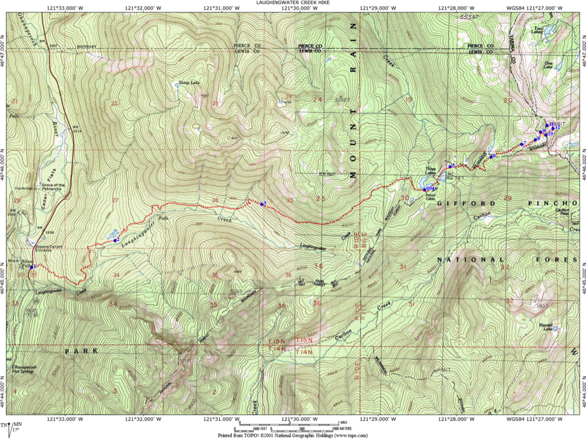

Laughingwater Creek Trail

 Length: 16 miles (round trip)
Length: 16 miles (round trip)
Beginning Elevation: 2,200 feet
End Elevation: 4,954 feet
Elevation Gain: 3,000 feet
Trailhead: On SR-123 in southeast Mt. Rainier National Park, go north from Ohanapecosh 1.7 miles or go south 0.2 mile from Stevens Canyon Road. The trailhead is on the east side of the highway (Waypoint 1). Parking here is very limited. Find more parking 150 yards north on the highway at the Stevens Canyon Road turnoff.
While this hike can be done as a long day hike, it is better suited to a backpack, camping at Three Lakes. This puts you in a good position to climb “Peak 5,941,” arguably the most spectacular viewpoint on the entire WOD Trail, in morning sun.
The Laughingwater Creek hike boasts three natural attractions that make this part of the Pacific Northwest a world-class destination for those who appreciate incredible natural values: an impressive old growth forest along lower and middle elevations of the trail, verdant subalpine meadows in the higher elevations, and a stunning view of nearby Mt. Rainier, monarch of the Cascade Range. As a bonus, off in the distance are great views of other Cascade Range peaks including Mt. Adams, the Goat Rocks, and Mt. St. Helens.
Though old growth forest that once mantled much of the “wetside” of the Pacific Northwest may be described as monotonous, this characteristic can hardly be applied to the Laughingwater Creek Trail. Numerous openings in the forest break any semblance of a monoculture forest. Whether due to blow downs, aged trees toppling, disease or landslides, this forest displays impressive “structural diversity.” Snags and decomposing logs are abundant and create openings where deciduous growth flourish, especially vine maple and a thriving shrub layer. This structural diversity is characterized by the presence of trees showing a variety of age and size classes, both living and dead, plus a diverse shrub, forb, and fungi and lichen component, all contribute to making this a textbook example of an old growth forest.
The Laughingwater Creek Trail climbs through four distinct forest zones: Western Hemlock, Silver Fir, Mountain Hemlock, and Subalpine Fir. Above continuous tree line near the Cascade crest, the trail traverses an impressive Alpine Parkland, a beautiful zone renowned for its stunning wildflower display.
 The initial mile of the trail climbs steadily in the Western Hemlock Zone through an even-aged forest of modest size, with western hemlock and Douglas-fir dominating. Scattered immature Pacific silver firs, their trunks ashen white and splotched, attest that this zone is too low and too dry for optimum development of this species here. Look for Pacific yews, a scraggly small tree with reddish, peeling bark. This forest is of modest size and appears even-aged, perhaps reflecting fairly recent fire history. For the first mile, the trail climbs a steep slope plagued by continuing instability and marked thus on geology maps as a landslide zone. Trail maintenance is challenging in this area. Tree growth reflects these landslides as numerous leaning or “drunken” trees seem poised to topple. Fallen trunks portend that these trees will fulfill this prediction, the only question is when.
The initial mile of the trail climbs steadily in the Western Hemlock Zone through an even-aged forest of modest size, with western hemlock and Douglas-fir dominating. Scattered immature Pacific silver firs, their trunks ashen white and splotched, attest that this zone is too low and too dry for optimum development of this species here. Look for Pacific yews, a scraggly small tree with reddish, peeling bark. This forest is of modest size and appears even-aged, perhaps reflecting fairly recent fire history. For the first mile, the trail climbs a steep slope plagued by continuing instability and marked thus on geology maps as a landslide zone. Trail maintenance is challenging in this area. Tree growth reflects these landslides as numerous leaning or “drunken” trees seem poised to topple. Fallen trunks portend that these trees will fulfill this prediction, the only question is when.
A spectrum of communities arranged along moisture gradients are found along the climb through the Western Hemlock Zone. Early in the climb, the moist end of the scale is represented with sword fern and a dense carpet of mosses. At the dry end on ridges, a mile or so up the trail, common shrubs in the understory are those adapted to dry sites: Oregon grape, salal, and red huckleberry. Twinflower is common on most sites. Openings caused by disturbance have vine maple.

At about 3000 feet elevation, one passes a forest-lined pond off on the west side of the trail (Waypoint 2). Spiraea shrubs edge the wet zone and pretty yellow pond lilies dot the lake’s surface. Towering Douglas-fir and western hemlock form a backdrop, making for a quintessential Northwest scene.
Above 3000 feet elevation, the forest abruptly becomes old growth of the Western Hemlock Zone. Scattered giant Douglas-fir, with deeply furrowed bark, tower more than 200 feet above the trail. Large western hemlock are much more numerous, distinctive on account of their dark narrowly furrowed bark. The forest floor is often poorly vegetated. Vanilla leaf is one conspicuous groundcover plant. Trillium is scarcer but utterly distinctive. The extent and grandeur of this forest make it obvious why the Laughingwater Creek Trail is featured in Old-growth Forest Hikes: Washington and Oregon (J. and D. Cissel. Mountaineers. 2003).
Bird species diversity on this section of the trek is low. Listen for species partial to old growth forests such as Pileated Woodpecker, Brown Creeper, Pacific Wren, Golden-crowned Kinglet, Townsend’s Warbler, and Varied Thrush.
Above about 4000 feet elevation, the last of the giant Douglas-firs and a growing scarcity of western hemlocks mark the Silver Fir Zone. Silver fir, many of impressive height and girth, approach the size of the hemlocks in the forest below (Waypoint 3). Dense mature silver fir forests typically show little undergrowth and ground cover vegetation save for abundant trailing rubus, whose delicate white blooms dapple the forest floor in summer.

Bark of mature Pacific silver firs is dark, in stark contrast to the whitish, splotched trunks of younger specimens. Look on mature silver firs for the “snowline.” Above about 15 feet above the ground on trunks in this forest, stringy lichens create a gray-green “hairy” appearance to the trunks. Below this level, lichens disappear, a rough indication of the mean maximum snow depth here, impressive indeed. As in the Western Hemlock Zone, disturbance is a frequent occurrence in the Silver Fir Zone. Dead and dying trees create openings. As there is more year-round water in this zone due to greater snowfall and tardiness of melt (late June typically), openings have a more diverse shrub and colorful forb cover. A number of seeps and small creeks are passed on the ascent where these features show nicely.
As in the Western Hemlock Zone, a number of communities on along the moisture gradient are encountered on this hike. Driest is silver fir with common beargrass in the understory. Next, Silver fir with a cover of Alaska huckleberry reflects slightly greater soil moisture through the growing season. Moister still one finds a more herb-rich community with purple twistedstalk and bunchberry dogwood as common representatives. Seeps or creek sides display a riot of green, with the formidable devilsclub being most conspicuous.
A number of areas of very wet seeps on steep side hills have very impressive Alaska-cedars, very distinctive on account of their stringy, ashen gray bark. The Silver Fir Zone continues up to Three Lakes.
About 5.5 miles up the trail, the trail reaches a minor pass and begins a slight descent into Three Lakes. A picturesque patrol cabin (Waypoint 4), sometimes staffed, is situated between the first and second of Three Lakes. The shores of Three Lakes, plus those of two more unnamed small lakes farther up along the trail are dominated by a sedge-dominated wetland zone. Back from this wetland is a strip of Spiraea or hardhack; back further are cold and snow adapted mountain hemlock, distinctive by their leaning tops and massive purplish-colored bark. A transition to the Mountain Hemlock Zone is occurring here, the Pacific Northwest’s snowiest tree zone. However, this zone is not as well represented or extensive as at wetter, snowier locations such as at Paradise on Mt. Rainier’s southwest slopes. Back from this strip on yet on yet higher ground is an upward continuation of the Silver Fir Zone.
On the lakes,look for family groups of Barrow’s goldeneye, a diving duck that nests in tree holes by the water’s edge. Spotted sandpipers bob along the shores, calling their loud notes.
Upward from Three Lakes towards the Cascade crest, the increasingly snowy and cold climate limits continuous forest cover typical of lower elevations along the trail. Tree cover diminishes with each bend in the trail. This end of continuous tree cover marks the beginning of the Alpine Parkland Zone, an ecosystem characterized by tree clumps alternating with treeless openings. Ever-larger openings appear, grown to a dense shrub layer, especially of dwarf huckleberries, various heathers, and mountain ash interspersed with showy forbs. Sedges are abundant. A riot of colorful wildflowers in this zone make this a good example of why parkland is a famous destination for hikers and naturalists in the Pacific Northwest. Indeed, these meadows are the showiest in the world and an important reason millions of visitors head each year to Pacific Northwest parks such as Mt. Rainier, Olympic, and North Cascades. Common species contributing to this marvelous display include Sitka valerian, false hellebore, broadleaf lupine, showy sedge, smallflower paintbrush, avalanche fawnlily, western pasqueflower, American bistort, feathery miterwort, fireweed, and common cowparsnip.

The parkland is favored summer range for elk and mule deer. Deer are often retiring hereabouts but you will likely hear elk snorting or even bugling.
About a mile uphill from Three Lakes, an east-west part of the trail reveals two forest zones in close proximity: Silver Fir to the south and Subalpine Fir to the north on a south-facing hillside (Waypoint 5). Around a bend in the trail, you will encounter Mountain Hemlock, then openings. Diversity is thus the hallmark of the 1.5 miles between Three Lakes and the Cascade crest.
Farther up, you see a bit off to the north an unnamed lake (Waypoint 6), the uppermost lake on the Laughingwater Creek Trail.
Lessons in subalpine ecology abound along this section uphill from the last lake. The pronounced effect of late snow lie on dwarfing of mountain hemlock is readily appreciated on many slopes (Waypoint 7). Closer to the crest, a transect of Alpine Parkland communities mantles the slope to the south (Waypoint 8): from red heather on the well-drained and rocky slope to wildflower-rich forbs in the small basin.
Traversing a steep rocky side slope, a good view of Mt. Rainier opens up. But, the best is yet to come. Soon, you intersect the Pacific Crest Trail (Waypoint 9). Go right (south) to the national park boundary at 5,700 feet elevation (Waypoint 10). A short scramble north brings you to the highest and grandest view on the entire WOD Trail (Waypoint 11) at 5,941 feet elevation. For the average hiker, this peak is best accessed by first descending east down the Pacific Crest Trail a few hundred yards (Waypoint 12) and then proceeding north over the lupine-covered slopes. Dominating the panorama is mighty Mt. Rainier, seemingly close enough to touch. Views of this monarch of the Cascade Range are simply put, stupendous. Study the mountains glacier-mantled slopes, the greatest ice cover of any mountain in the United States south of Alaska. Views of the Goat Rocks, an old and thoroughly eroded Cascade volcano, and Mt. Adams, third highest peak in the range, are grand, too. Through gaps in the trees off to the southwest, look for Mt. St. Helens, until 1980 the most perfect cone in the Cascades, now missing 1.300 feet of its top.


At your feet on this rocky eminence are wedded to dry sites, including common juniper, Cascade-crest desert parsley, and buckwheat.
Backpackers will find good campsites at Two Lakes. Where Laughingwater Creek Trail meets the Pacific Crest Trail (Waypoint 9), go north 0.15 mile then right on the Two Lakes Trail 0.75 mile to the lake. Beautiful Alpine Parkland is traversed en route to these lakes. Listen for hoary marmot, whose sharp whistle warns danger, whether it be a hiker or bird of prey overhead.

LAUGHINGWATER TRAIL WAYPOINTS:
1 - 46,45.102,-121,33.430, 2167’ TRAILHEAD
2 - 46,45.341,-121,32.380, 3028’ "LILY POND"
3 - 46,45.643,-121,30.467, 4024’ TOP OF WESTERN HEMLOCK ZONE
4 - 46,45.783,-121,28.411, 4685’ THREE LAKES CABIN
5 - 46,46.106,-121,27.427, 5259’ NORTH:SUBALPINE FIR. SOUTH: SILVER FIR
6 - 46,46.072,-121,27.583, 5147’ UPPERMOST THREE LAKES
7 - 46,46.182,-121,27.196, 5416’ LATE SNOW LIE-STUNTED CONIFERS
8 - 46,46.233,-121,26.948, 5633’ WET FORBS TO DRY HEATHER TRANSECT
9 - 46,46.304,-121,26.994, 5695’ PACIFIC CREST TRAIL
10- 46,46.292,-121,26.862, 5773’ MT RAINIER NATIONAL PARK BOUNDARY
11- 46,46.351,-121,26.853, 5888’ VIEWPOINT-PEAK 5941'
12- 46,46.321,-121,26.769, 5696’ "EASY ACCESS" TO PEAK 5941'